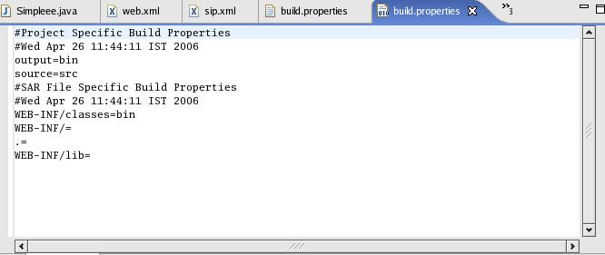
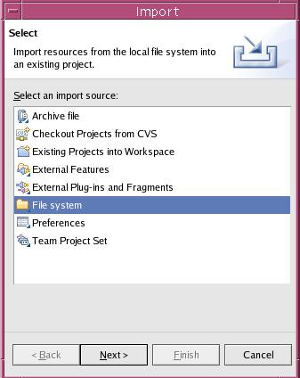
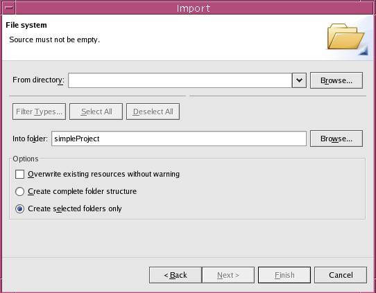
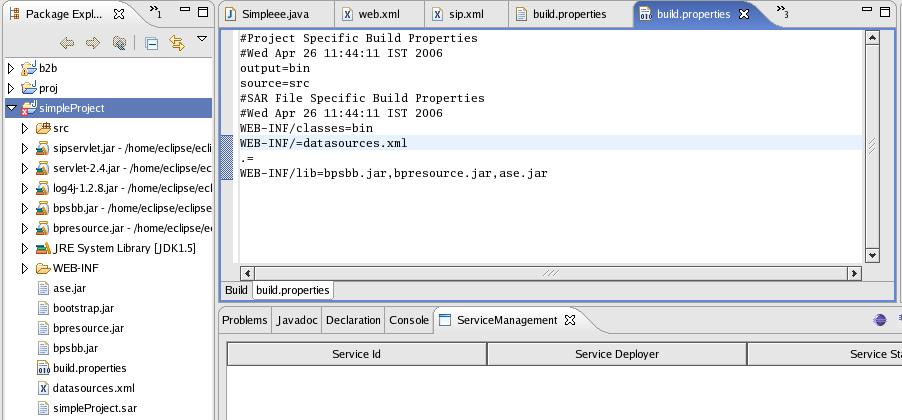

This
option
allows you to build a service. By building service we mean building of
a 'sar' file so that it can be deployed on a Sip Application Server.
When user creates a BayPackets project build.properties file is generated along with many other files. User can customize the process of building Service by editing this file.
1. Open Eclipse.
2. Select the BuildService menu icon on Eclipse menu bar. Then click the Build Service.
3. Eclipse
displays the Message Dialog showing 'sar' file is built.
Editing build.properties file 
The build.properties file contains following default entries as created during Bay Packets Project creation time.

output=bin means Eclipse will place the binaries of the project (when user builds the project) into this folder.
source=src means that the source folder of the Project is src and user will create source files (i.e. java files) in this folder.
WEB-INF/classes=bin means that WEB-INF/classes will contain all the binaries of the project.
If the user wants to add a jar file or any file or any directory in the
WEB-INF directory. The following procedure should be adopted.
1. Select the Project, right click and select import, click Next.

2. Select appropriate files, folder from the File system browser.

3. Click the
finish button. Now add the names of the imported files or folders to
appropriate directory as a comma separated list in build.properties.
Usually SIP based services require files under WEB-INF directory.
Assuming user wants to add some files under WEB-INF. Then after
importing those files/folder as mentioned above edit build.propreties
as
shown. Now when user builds the service, the service sar file will
contain bpsbb.jar, bpresource.jar and ase.jar in WEB-INF/lib directory
and datasources.xml in WEB-INF/ directory.
